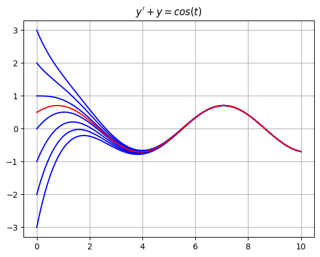
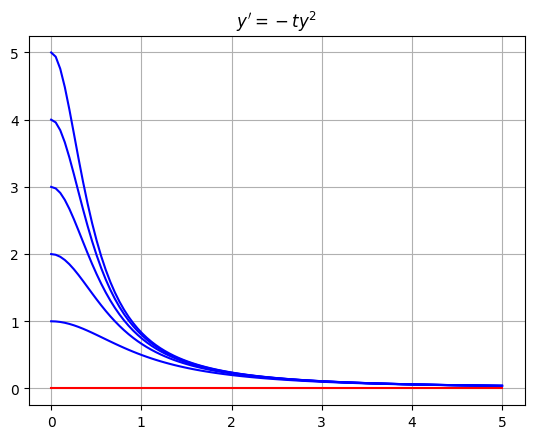
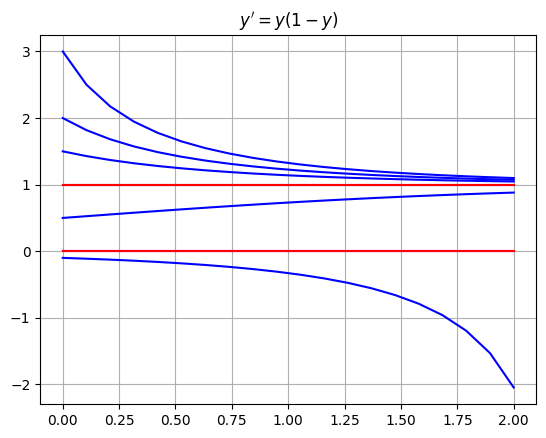
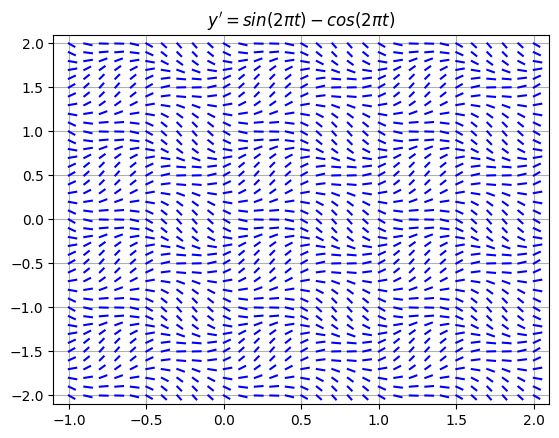
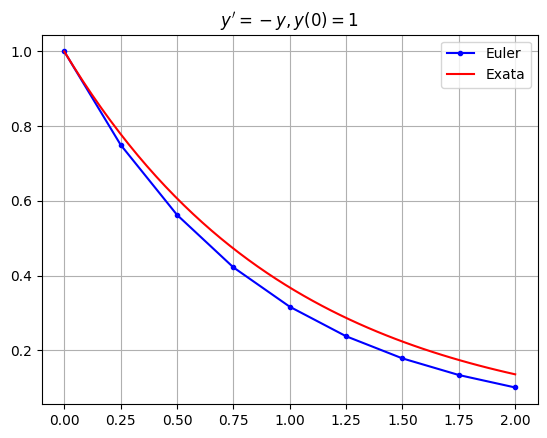
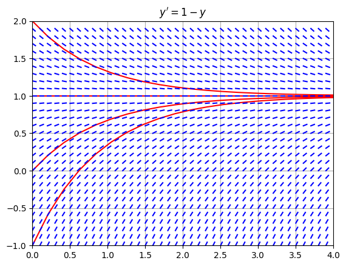
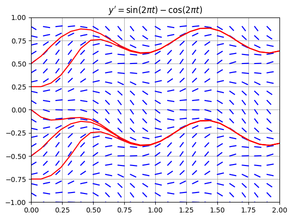

Equações Diferenciais#
Uma equação diferencial é uma equação que envolve uma função desconhecida \(y(t)\) e suas derivadas \(y',y'',\dots\), e a ordem de uma equação diferencial é a derivada de maior ordem de \(y(t)\) que aparece na equação. Existem métodos para resolver equações de primeira ordem que são separáveis e/ou lineares, no entanto, a maioria das equações diferenciais não pode ser resolvida explicitamente com funções elementares. Sempre podemos usar métodos gráficos e numéricos para aproximar soluções de qualquer equação diferencial de primeira ordem.
import numpy as np
import matplotlib.pyplot as plt
Equações Lineares#
Uma equação diferencial de primeira ordem é linear se for da forma
para algumas funções \(p(t)\) e \(q(t)\). Por exemplo, a equação
é uma equação linear de primeira ordem. Use o método do fator integrante para calcular a solução geral
A constante \(C\) é determinada pelo valor inicial \(y(0) = C + 1/2\). Plote a solução \(y(t)\) no intervalo \(0 \leq t \leq 10\) para cada valor inicial \(y(0)=-3,-2,-1,0,1,2,3\).
t = np.linspace(0,10,100)
for y0 in range(-3,4):
C = y0 - 1/2
y = C*np.exp(-t) + (np.cos(t) + np.sin(t))/2
plt.plot(t,y,'b')
plt.title("$y' + y = cos(t)$"), plt.grid(True)
plt.plot(t,(np.cos(t) + np.sin(t))/2,'r')
fig = plt.show()

Note que todas as soluções neste exemplo convergem para a solução estacionária
à medida que \(t \to \infty\).
Equações Separáveis#
Uma equação de primeira ordem é separável se for da forma
para algumas funções \(f(t)\) e \(g(y)\). Por exemplo, a equação
é uma equação separável de primeira ordem. Note que a equação é não linear. Use o método de separação de variáveis para calcular a solução geral
A constante \(C\) é determinada pelo valor inicial \(y(0) = 1/C\) (exceto \(y(t) = 0\) se \(y(0)=0\)). Plote a solução \(y(t)\) no intervalo \(0 \leq t \leq 5\) para cada valor inicial \(y(0)=1,\dots,5\).
t = np.linspace(0,5,100)
for y0 in range(1,6):
C = 1/y0
y = 1/(t**2 + C)
plt.plot(t,y,'b')
plt.title("$y' = -ty^2$"), plt.grid(True)
plt.plot(t,0*t,'r')
plt.show()

Note que todas as soluções neste exemplo convergem para \(y(t) \to 0\) à medida que \(t \to \infty\).
Equações Autônomas#
Uma equação de primeira ordem é autônoma se for da forma
onde o lado direito \(f(y)\) não depende da variável independente \(t\). Note que uma equação autônoma também é separável. Por exemplo, a equação
é uma equação autônoma de primeira ordem. Calcule a solução geral usando separação de variáveis
A constante \(C\) é determinada pelo valor inicial \(y(0) = C/(1 + C)\) (exceto \(y(t)=0\) quando \(y(0)=1\)). Plote a solução \(y(t)\) no intervalo \(0 \leq t \leq 2\) para cada valor inicial
t = np.linspace(0,2,20)
for y0 in [-0.1,0.0,0.5,1.5,2,3]:
C = y0/(1 - y0)
y = C*np.exp(t)/(1 + C*np.exp(t))
plt.plot(t,y,'b')
plt.plot([0,2],[1,1],'b') # Plot constant solution y(t)=1
plt.title("$y' = y(1-y)$"), plt.grid(True)
plt.plot(t,1+0*t,'r')
plt.plot(t,0*t,'r')
plt.show()

Note que todas as soluções \(y(t)\) com valor inicial \(y(0)>0\) convergem para \(y(t) \to 1\) à medida que \(t \to \infty\). Também \(y(t)=0\) para todo \(t\) se \(y(0)=0\). Finalmente, \(y(t) \to -\infty\) à medida que \(t \to \infty\) se \(y(0) < 0\).
Campos de Direção (Slope Fields)#
Nos exemplos acima, conseguimos encontrar a solução geral da equação diferencial de primeira ordem e plotar a solução para diferentes valores iniciais. No entanto, a maioria das equações diferenciais não pode ser resolvida explicitamente com funções elementares. Então, o que fazemos? Podemos sempre aproximar soluções com métodos numéricos e métodos gráficos.
O campo de direções de uma equação diferencial de primeira ordem \(y'=f(t,y)\) é um método gráfico para visualizar soluções. A ideia é que uma equação \(y'=f(t,y)\) nos dá informações completas sobre a inclinação de uma solução em qualquer ponto, mesmo que não saibamos uma fórmula para a solução. Crie um campo de direções simplesmente desenhando uma pequena linha com inclinação \(f(t,y)\) em vários pontos \((t,y)\) em uma grade no plano \(ty\).
Por exemplo, plote o campo de direções de \(y' = \sin(2\pi t) - \cos(2 \pi y)\) no intervalo \(-1 \leq t \leq 2\), \(-2 \leq y \leq 2\) com um passo de grade \(h=0.1\).
f = lambda t,y: np.sin(2*np.pi*t) - np.cos(2*np.pi*y)
h = 0.1; L = 0.5*h;
t_grid = np.arange(-1,2+h,h)
y_grid = np.arange(-2,2+h,h)
for t in t_grid:
for y in y_grid:
m = f(t,y)
theta = np.arctan(m)
plt.plot([t,t + L*np.cos(theta)],
[y,y + L*np.sin(theta)],'b')
plt.title("$y' = sin(2 \pi t) - cos(2 \pi t)$")
plt.grid(True), plt.xlim([-1-h,2+h]), plt.ylim([-2-h,2+h])
plt.show()

O campo de inclinação nos permite descrever o comportamento das soluções. Por exemplo, estime o valor \(y(2)\) para a solução única \(y(t)\) da equação \(y' = \sin(2 \pi t) - \cos(2 \pi t)\) que satisfaz a condição inicial \(y(0)=0\). Começando em \(y(0)=0\), traçamos o caminho através do campo de inclinação para encontrar \(y(2) \approx -0.4\).
Método de Euler#
O método numérico mais simples para aproximar soluções de equações diferenciais é o método de Euler. Considere uma equação diferencial de primeira ordem com uma condição inicial:
A ideia por trás do método de Euler é:
Construir a equação da reta tangente à função desconhecida \(y(t)\) em \(t=t_0\):
\[ y = y(t_0) + f(t_0,y_0)(t - t_0) \]onde \(y'(t_0) = f(t_0,y_0)\) é a inclinação de \(y(t)\) em \(t=t_0\).
Usar a reta tangente para aproximar \(y(t)\) em um pequeno passo de tempo \(t_1 = t_0 + h\):
\[ y_1 = y_0 + f(t_0,y_0)(t_1 - t_0) \]onde \(y_1 \approx y(t_1)\).
Repetir!
A fórmula para o método de Euler define uma sequência recursiva:
onde \(y_n \approx y(t_n)\) para cada \(n\). Se escolhermos valores de \(t\) igualmente espaçados, a fórmula se torna:
com um passo de tempo \(h = t_{n+1} - t_n\). Se implementarmos \(N\) iterações do método de Euler de \(t_0\) a \(t_f\), então o passo de tempo é
Note dois pontos muito importantes sobre o método de Euler e métodos numéricos em geral:
Um passo de tempo menor \(h\) reduz o erro na aproximação.
Um passo de tempo menor \(h\) requer mais cálculos!
Implementação#
Escreva uma função chamada odeEuler que receba 3 parâmetros de entrada f, t e y0 onde:
fé uma função que representa o lado direito de uma equação diferencial de primeira ordem \(y' = f(t,y)\)té um array NumPy 1Dy0é um valor inicial \(y(t_0)=y_0\) onde \(t_0\) é o valort[0]
A função odeEuler implementa o método de Euler e retorna um array NumPy 1D de valores de \(y\) (com comprimento len(t)) que aproxima a solução \(y(t)\) da equação diferencial \(y' = f(t,y)\), \(y(t_0)=y_0\).
def odeEuler(f,t,y0):
y = np.zeros(len(t))
y[0] = y0
for n in range(0,len(t)-1):
y[n+1] = y[n] + f(t[n],y[n])*(t[n+1] - t[n])
return y
Exemplos#
Exemplo 1#
Calcule a aproximação pelo método de Euler da solução de \(y' = -y,y(0)=1\) usando um passo de tempo \(h=0.25\). Plote a aproximação junto com a solução exata \(y(t)=e^{-t}\) no intervalo \(0 \leq t \leq 2\).
f = lambda t,y: -y
t0 = 0; tf = 2; h = 0.25; N = int((tf - t0)/h);
t = np.linspace(t0,tf,N+1); y0 = 1;
y = odeEuler(f,t,y0)
plt.plot(t,y,'b.-'), plt.grid(True)
t_exact = np.linspace(t0,tf,50)
y_exact = np.exp(-t_exact)
plt.plot(t_exact,y_exact,'r')
plt.title("$y'=-y,y(0)=1$"), plt.legend(["Euler","Exata"])
plt.show()

Exemplo 2#
Considere a equação \(y' = 1 - y\). Plote a aproximação pelo método de Euler para diferentes valores iniciais junto com o campo de inclinação.
f = lambda t,y: 1 - y
h = 0.1; L = 0.5*h;
t = np.linspace(0,4,20)
for y0 in range(-1,3):
y = odeEuler(f,t,y0)
plt.plot(t,y,'r-')
t_grid = np.arange(0,4,h)
y_grid = np.arange(-1,2,h)
for t in t_grid:
for y in y_grid:
m = f(t,y)
theta = np.arctan(m)
plt.plot([t,t + L*np.cos(theta)],
[y,y + L*np.sin(theta)],'b')
plt.grid(True), plt.xlim([0,4]), plt.ylim([-1,2])
plt.title("$y' = 1 - y$")
plt.show()

Exemplo 3#
Considere a equação \(y' = \sin(2 \pi t) - \cos(2 \pi y)\). Plote a aproximação pelo método de Euler para diferentes valores iniciais junto com o campo de inclinação.
f = lambda t,y: np.sin(2*np.pi*t) - np.cos(2*np.pi*y)
h = 0.1; L = 0.5*h;
t_grid = np.arange(0,2,h)
y_grid = np.arange(-1,1,h)
for t in t_grid:
for y in y_grid:
m = f(t,y)
theta = np.arctan(m)
plt.plot([t,t + L*np.cos(theta)],
[y,y + L*np.sin(theta)],'b')
t = np.linspace(0,2,26)
for y0 in [-0.75,-0.5,0.0,0.25,0.5]:
y = odeEuler(f,t,y0)
plt.plot(t,y,'r-')
plt.grid(True), plt.xlim([0,2]), plt.ylim([-1,1])
plt.title("$y' = \sin(2 \pi t) - \cos(2 \pi t)$")
plt.show()
